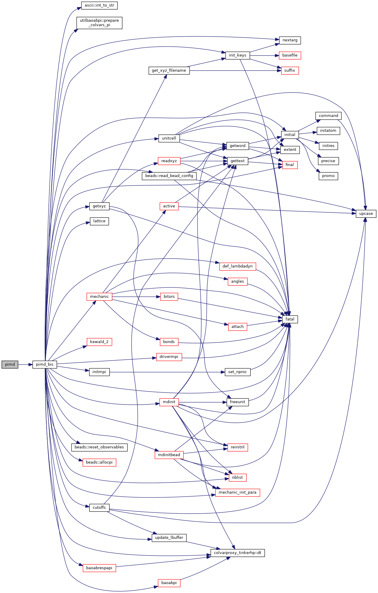
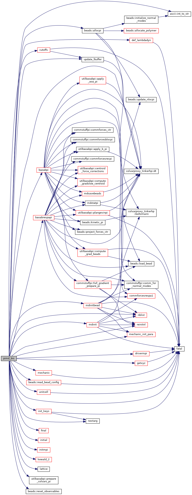
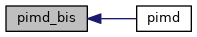

|
Tinker-HP v1.3
|
|
Tinker-HP v1.3
|
Go to the source code of this file.
Functions/Subroutines | |
| program | pimd |
| computes a molecular dynamics trajectory in one of the standard statistical mechanical ensembles and using any of several possible integration methods More... | |
| subroutine | pimd_bis |
| computes a molecular dynamics trajectory in one of the standard statistical mechanical ensembles and using any of several possible integration methods More... | |
| program pimd | ( | ) |
computes a molecular dynamics trajectory in one of the standard statistical mechanical ensembles and using any of several possible integration methods
| no | params |
Definition at line 23 of file pimd.f90.
References pimd_bis().

| subroutine pimd_bis | ( | ) |
computes a molecular dynamics trajectory in one of the standard statistical mechanical ensembles and using any of several possible integration methods
| no | params |
Definition at line 39 of file pimd.f90.
References beads::allocpi(), baoabpi(), baoabrespapi(), cutoffs(), def_lambdadyn(), drivermpi(), colvarproxy_tinkerhp::dt(), fatal(), final(), getxyz(), init_keys(), initial(), initmpi(), ascii::int_to_str(), kewald_2(), lattice(), mdinit(), mdinitbead(), mechanic(), mechanic_init_para(), nblist(), nextarg(), utilbaoabpi::prepare_colvars_pi(), beads::read_bead_config(), reinitnl(), beads::reset_observables(), unitcell(), and update_lbuffer().
Referenced by pimd().


 1.8.5
1.8.5